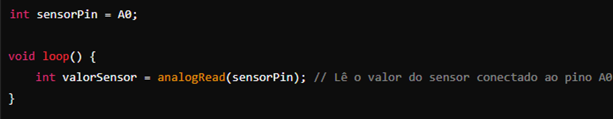

Automação Industrial
Calculo de Resistencia dos Resistores
Resistores: Os resistores são componentes eletrônicos que têm a função de limitar a corrente elétrica em um circuito. A unidade de medida da resistência é o Ohm (Ω).
Como Calcular a Resistência de um Resistor:
A resistência de um resistor pode ser calculada usando a Lei de Ohm:
R=IV
RRR é a resistência em Ohms (Ω),
VVV é a tensão aplicada ao resistor em Volts (V),
III é a corrente que passa pelo resistor em Ampères (A).
Sketch – Blink e sua estrutura
"Sketch" no contexto do Arduino refere-se ao código-fonte escrito para controlar o microcontrolador Arduino. O Sketch mais básico e comumente usados para aprender e testar a funcionalidade do Arduino é o "Blink", que faz com que um LED conectado ao Arduino pisque em um intervalo regular.
Funcionamento
Quando o Arduino é ligado, a função setup() é executada uma vez para configurar o pino do LED como saída. Em seguida, a função loop() é executada continuamente: Liga o LED por 1 segundo. Desliga o LED por 1 segundo.
Este ciclo de ligar e desligar se repete indefinidamente enquanto o Arduino estiver ligado.
Variavei Locais
As variáveis locais são declaradas dentro de funções ou blocos específicos e têm um escopo limitado dentro desses blocos. Elas são usadas principalmente para armazenar valores temporários ou intermediários durante a execução do código.

• valorSensor é uma variável local declarada dentro da função setup().
• Ela só é acessível dentro do próprio setup() e não pode ser usada dentro da função loop() ou em qualquer outro lugar fora de setup().
Variaveis Locais
Variáveis globais são declaradas fora de qualquer função e têm um escopo que abrange todo o programa. No Tinkercad, elas são frequentemente usadas para armazenar dados que precisam ser acessados e modificados por várias partes do código.

Constantes
Constantes são valores que não mudam durante a execução do programa e são úteis para definir valores que não devem ser alterados acidentalmente. No Tinkercad, as constantes são frequentemente usadas para representar valores fixos como pinos de sensores ou atuadores.
pinMode()
• Função: Configura o modo de um pino digital como entrada ou saída.
• pinMode(pin, mode);
• pin: Número do pino digital.
• mode: INPUT para entrada ou OUTPUT para saída.
digitalRead()
• Função: Lê o estado de um pino digital (HIGH ou LOW).
• digitalRead(pin);
• pin: Número do pino digital a ser lido.

digitalWrite()
• Função: Define o estado de um pino digital como HIGH ou LOW.
• digitalWrite(pin, value);
• pin: Número do pino digital.
• value: HIGH (5V) ou LOW (0V).

delay()
• Função: Pausa a execução do programa por um número específico de milissegundos.
• delay(milliseconds);
• milliseconds: Tempo de pausa em milissegundos (1 segundo = 1000 milissegundos).
delayMicroseconds()
• Função: Pausa a execução do programa por um número específico de microssegundos.
• delayMicroseconds(microseconds);
• microseconds: Tempo de pausa em microssegundos (1 segundo = 1.000.000 microssegundos).

millis()
• Função: Retorna o número de milissegundos desde o início do programa.
• unsigned long millis();
analogRead()
• Função: Lê o valor analógico (0-1023) de um pino analógico.
• int analogRead(pin);
• pin: Número do pino analógico.

analogWrite()
• Função: Escreve um valor analógico (PWM) em um pino PWM.
• analogWrite(pin, value);
• pin: Número do pino PWM.
• value: Valor analógico a ser escrito (0-255).
Funções (Function)
No contexto do Arduino, funções são código que realizam tarefas e podem ser chamadas de outros locais do programa.
• tipo_retorno: Tipo de dado retornado pela função (void se não retornar nenhum valor).
• nome_funcao: Nome da função.
• parametros: Parâmetros passados para a função (opcionais).
Entrega da Atividade Semáforo
Entrega Exercício 1
Entrega Exercício 1: